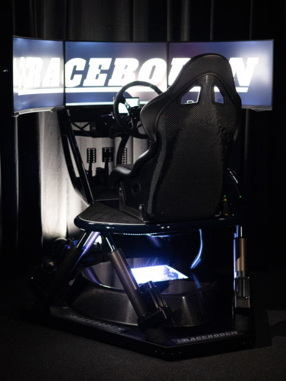

Carl Bodén berättar om idéen till Raceboden
I början 2024 bjöd min vän Andreas Larsson in mig på en visning av en racingsimulator, Racemore GT600S, i Vetlanda. Tyckte det var sjukt häftigt! Så jag tänkte att om jag tyckte det var kul och kunde tänka mig köra mer så måste det finnas fler som tycker likadant. Jag beställde en Racemore i samma färg som farsans gamla E300 Turbodiesel för att hyra ut på plats och åka ut på event med.
Andreas som tävlar i simracing och som har hållit på med simulatorer i snart 20 år från och till var mer sugen på att montera och skräddarsy simulator åt kunder. Idéerna utvecklades och det bildades 2 bolag, Raceboden och Simraceteknik. Raceboden håller på med uthyrning och event. Simraceteknik är återförsäljare av simulatorutrustning åt bla Qubic System. Raceboden och Simracetekniks simulatorer finns att hyra på plats här i Vetlanda.
I lokalen i Vetlanda finns det i dagsläget 3 stycken maskiner med olika rörelsesystem: en Racemore 600s, en Qubic System V20 och en Simlab med Qubic Qs-220. Samtliga maskiner är utrustade med Simucube hårdvara.
